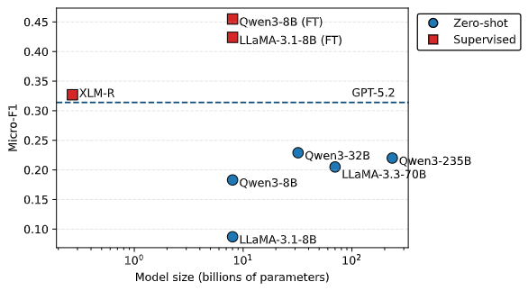

Overview
How time steers readers
The way time is framed in the news can induce urgency, nostalgia, or fear, and shape how readers interpret events (beyond factual chronology).
From extraction to framing
Much temporal NLP focuses on when something happened (IE, tense, ordering) or coarse orientation (past vs. future). Less work treats time as persuasive framing.
What we detect
Sentence-level multi-label detection of temporal framing under an 8-category theory-informed taxonomy.
By the numbers
458 articles · 20,659 segmented sentences · 2,365 sentences with ≥1 label · 3,030 frame instances (multi-label).
Eight ways time persuades
Eight temporal frames (primacy, recency, urgency, temporal anchoring, nostalgia, temporal contrast, continuity, skeptical) capture how language uses time for persuasion.
See the Taxonomy section below for definitions, examples, and rhetorical functions.
Beyond chronology
Time is more than ordering events: it is a rhetorical frame that shapes urgency, nostalgia, legitimacy, and how audiences weigh past, present, and future, often independently of tense or TIMEX-style extraction. Computational temporal framing supports media profiling, stance and narrative analysis, and cross-lingual comparison of strategies across outlets and events; the same lens applies in political communication, crisis reporting, and health messaging, where temporal appeals routinely steer interpretation and decision-making.
Key Contributions
-
1
Novel task
- Bridges temporal NLP with cognitive & social-science framing: why time is invoked, not only when events occur.
- Sentence-level multi-label targets: finer than document-only framing, richer than coarse past/future orientation.
-
2
Novel taxonomy
- Distinct rhetorical “uses of time” (e.g. urgency vs. nostalgia).
- The taxonomy is grounded in social-science theory on framing and temporality, not an ad hoc label set.
-
3
Multilingual dataset
- 458 docs: 238 EN · 220 DE; splits 319 / 63 / 76 (train / dev / test).
- 20,659 segmented sentences; 2,365 labeled (sparse); 335 docs contain ≥1 labeled sentence.
- High-quality human annotation: trained annotators (not crowdsourced), shared written guidelines, weekly calibration, adjudication in INCEpTION; agreement measured with Krippendorff’s α (reported in the paper).
- The paper gives a detailed corpus analysis, including lexical patterns and co-occurrence of frames: how often frames combine, and how they distribute across languages and splits.
-
4
Detailed experimental analysis
- Baselines span encoder fine-tuning (e.g. XLM-R, DeBERTa-class models, LLaMA, Qwen) and LLM zero-shot / in-context settings, evaluated on the fixed 319/63/76 splits with multi-label micro/macro F1.
- Fine-tuned smaller models can strongly outperform much larger zero-shot models; supervised XLM-R sits above the plotted GPT-5.2 reference line, while zero-shot performance scales only modestly with model size.

Micro-F1 vs. model size (log scale): zero-shot (circles) vs. supervised fine-tuning (squares). See the paper for full experimental setup and numbers.
Dataset Snapshot
Taxonomy
Primacy Significance attributed to being first in time.
Detailed definition
Rhetorical function
Positive examples
“As the first city to adopt this policy, we set the standard for the region.” Explain
Being first is explicitly linked to leadership and legitimacy, making temporal precedence the persuasive force.
“The collapse of the bank unsettled confidence in the markets to unprecedented levels.” Explain
Low market confidence is framed as without precedent, amplifying the perceived danger of the bank’s collapse.
Negative examples
“The vaccine was approved first.” Explain
Taken in isolation, this is a chronological report; it does not claim that being first entails special significance. However, if being first plays a persuasive role when the surrounding context is taken into account, then the same sentence could function as primacy framing.
“The best-performing vaccine won praise.” Explain
The praise is grounded in quality (performance), not temporal primacy; it resembles primacy in a general sense but lacks the temporal element.
Recency Significance attributed to the most recent events.
Detailed definition
Rhetorical function
Positive examples
“Today’s figures matter most for judging performance.” Explain
Freshness is explicitly framed as the reason for relevance.
“Just released footage shows what really happened.” Explain
The recency of the footage is used as proof of accuracy and priority.
Negative examples
“A recent poll shows that 60% of voters support the policy.” Explain
Although temporally recent, this is straightforward factual reporting rather than a persuasive appeal to recency.
“In a recent speech, a respected senator criticized the plan and rightfully so.” Explain
Although it mentions recency, the persuasive force comes from the senator’s authority and opinion rather than the timing. The temporal marker is incidental, not persuasive.
Urgency Emphasis on limited time or imminent consequences or threats.
Detailed definition
Rhetorical function
Positive examples
“Congress must act within 72 hours to prevent a government shutdown.” Explain
A specific deadline creates immediacy and pressure for political decision-making.
“This election is the defining moment for our nation’s future.” Explain
Frames the present moment as uniquely decisive and urgent.
Negative examples
“Most voters say healthcare is an important issue.” Explain
Conveys significance, but without compressed time or urgency.
“Only a limited number of senators support the bill.” Explain
Indicates scarcity of support, but not temporal scarcity; no deadline or ticking clock.
Temporal Anchoring Framing the discussion through the lens of past events.
Detailed definition
Rhetorical function
Positive examples
“We live in a post-9/11 world where national security must come first, and the congress must take immediate action.” Explain
The landmark date frames a lasting shift in values and policy priorities.
“This legislation represents the boldest reform since the New Deal.” Explain
Frames present significance by situating it relative to a landmark era.
Negative examples
“Security policies were tightened after 9/11.” Explain
Merely states historical sequence.
“We live in a world where national security must come first, and the congress must take immediate action.” Explain
It is the same example from earlier, but the omission of the temporal reference to 9/11. So while it is persuasive, it is not anchored in time.
Nostalgia Invocation of a cherished past.
Detailed definition
Rhetorical function
Positive examples
“We must return to the prosperity of the postwar years.” Explain
Frames a remembered era of economic success as the standard for present policy.
“We need to revive the spirit of bipartisanship that once defined Congress.” Explain
Invokes a remembered political culture as guidance for present reform.
Negative examples
“The city is restoring historical facades downtown.” Explain
Reports an action but does not frame the past as a persuasive political ideal.
“Many voters say they value tradition.” Explain
Expresses a general liking for continuity, but without invoking a shared past as a model for today.
Temporal Contrast Juxtaposition of “then” versus “now.”
Detailed definition
Rhetorical function
Positive examples
“Once a neglected district, now a thriving hub.” Explain
Direct before and after comparison makes temporal change salient.
“Twenty years ago tuition was manageable, today it traps students in debt.” Explain
Uses then vs. now contrast to highlight deterioration.
Negative examples
“Contrasting 2005 to 2010, the downtown population increased by 20%.” Explain
Without full context, this sentence is a factual report of a statistical change without rhetorical contrast.
“Urban elites and rural voters have conflicting values, and policymakers must bridge this divide.” Explain
Makes a rhetorical appeal based on geographical contrast, not a temporal one.
Continuity Persistence across time.
Detailed definition
Rhetorical function
Positive examples
“For centuries this constitution has safeguarded our liberties.” Explain
Longevity is invoked as a direct source of legitimacy, even though whether the constitution truly safeguarded liberties is a matter of interpretation and debate.
“Our neutrality has endured for generations, and it continues to serve us well.” Explain
Persistence over time is framed as proof of value and stability.
“Every election season, the same promises return.” Explain
Uses recurrence as both explanation and expression of discontent and critique.
“Markets crash and recover; this downturn will pass.” Explain
Frames recurrence as reassurance.
“Our coalition has grown election after election, and nothing can stop this progress now.” Explain
Past trajectory is invoked to suggest inevitability.
“This campaign gains strength with every new supporter who joins us.” Explain
Accumulating participation is framed as persuasive momentum.
Negative examples
“The law remains on the books.” Explain
Factually reports longevity, but without using it in a persuasive way.
“The 1990 law is widely supported by voters.” Explain
Legitimacy is attributed to present popularity, not to persistence or longevity over time.
“As every winter, flu cases surge again.” Explain
Observes a seasonal pattern but does not employ it rhetorically.
“The flu is a serious threat to public health and cannot be ignored.” Explain
Makes an evaluative claim without invoking recurrence.
“The rally had great energy and everyone was fired up.” Explain
Shows force and enthusiasm in the moment, but not a trajectory over time.
“Voter turnout has increased in each of the last three elections.” Explain
Without the full context, this sentence merely reports momentum, but without any rhetorical appeals.
Skeptical Casting doubt about the future.
Detailed definition
Rhetorical function
Positive examples
“The plan may collapse under financial pressure.” Explain
Draws attention to risk in order to slow or block action.
“The merger could backfire on consumers.” Explain
Frames a potential outcome as harmful and uncertain.
Negative examples
“The plan costs 2 billion dollars.” Explain
A financial fact, not a speculative projection.
“As history shows, a ceasefire will eventually be signed.” Explain
Treats the outcome as inevitable certainty rather than a contingent risk.
Dataset Access
After your access request is approved, use the Files tab on the dataset page to download the release. Sign in, accept the dataset terms, and request access for non-commercial research use.
Dataset files
documents.jsonl: article text, URL, split, source, language, publication dateannotations.jsonl: sentence text +temporal_frames(multi-label)
Citation
If you use this dataset, please cite the accompanying paper.
@inproceedings{mahmoud2026temporal,
title = {Uncovering Temporal Framing in the News},
author = {Mahmoud, Tarek and Solopova, Veronika and Sahitaj, Premtim and Sahitaj, Ariana and Upravitelev, Max and Abassy, Mervat and Shaikh, Hana Fatima and Foroutan, Neda and Schmitt, Vera and Nakov, Preslav},
booktitle = {Proceedings of the 64th Annual Meeting of the Association for Computational Linguistics (ACL)},
year = {2026},
note = {To appear}
}